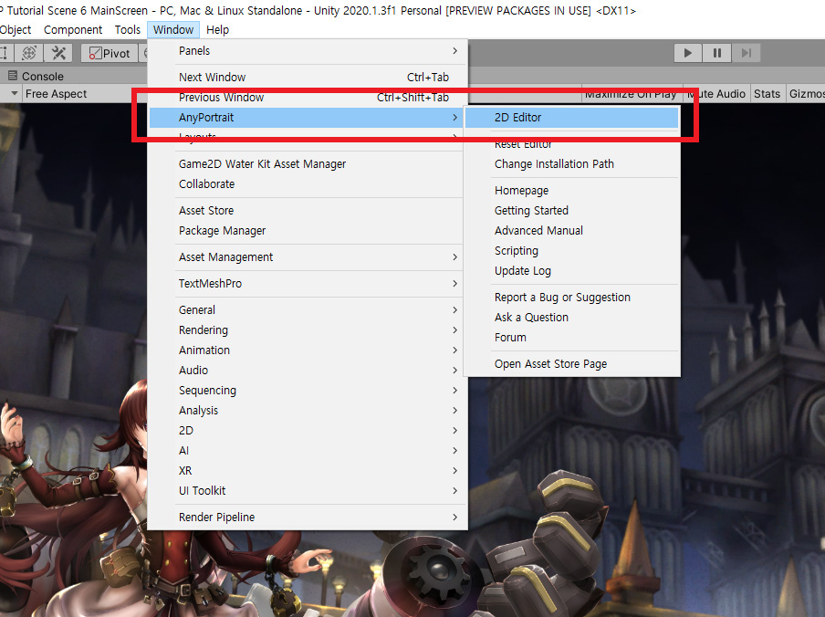
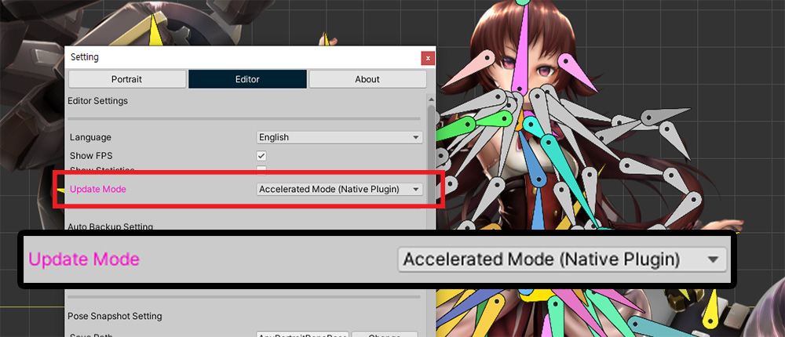
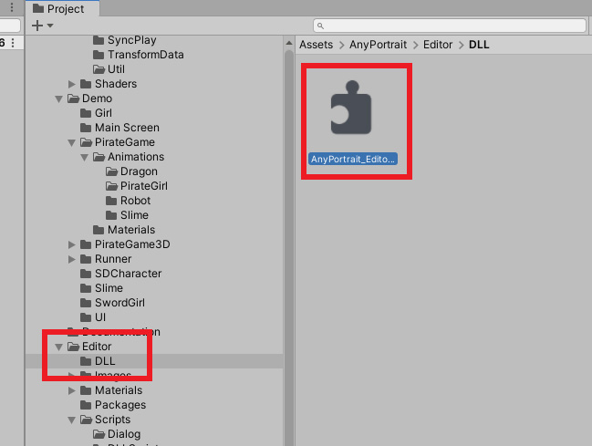
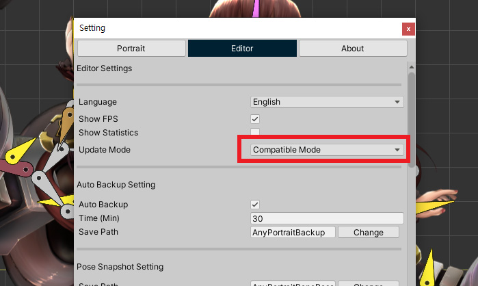

AnyPortrait > Manual > Accelerated mode
Accelerated mode
1.3.2
Our team is trying various methods to improve the performance of AnyPortrait editor while overcoming the limitations of the Unity's Extension.
Accelerated Mode introduced on this page was developed as part of that effort.
Caution
Accelerated Mode is an experimental function and may not work depending on the execution environment.
Also, performance may not improve significantly depending on the Unity editor version or execution environment.
Give our team feedback and we will continue to improve it.
Accelerated mode currently only supports Windows and Mac OS in 64-bit environment.
Install the Accelerated Mode plugin
Accelerated Mode was developed using Unity's Native Plugin.
Due to the nature of the Unity engine, it is necessary to go through some complicated installation steps.
Please read the description below carefully.

(1) Open the Settings Dialog of AnyPortrait editor.
(2) Click the Editor tab to see the Update Mode option.
(3) The update method of the editor can be selected between Compatible Mode and Accelerated Mode.
By default, Compatibility Mode will be selected.
Let's choose Accelerated Mode.

If you change to Accelerated Mode, the Install button appears with the warning message above.
This is because Accelerated Mode does not work unless a separate plug-in that supports Accelerated Mode is installed.
(1) Click the Install Plugin button.
(2) The plugin is not installed right away and a message appears telling you to restart the Unity editor first. Press the Okay button.

Restart the Unity editor and open AnyPortrait editor.

Before AnyPortrait editor opens, a dialog will appear asking if the Accelerated Mode plugin will be installed.
Click Install Now to install the plug-in.

When the plug-in is installed, AnyPortrait editor opens and the installation result message appears.
However, due to the nature of the native plugin, the following various situations may occur after installation.
- After successful installation, Accelerated Mode starts working immediately.
- Installation was successful, but the native plugin cannot be run. You will need to restart the Unity Editor again.
- Installation failed and the Accelerated Mode plugin is not supported.
In the case of the above image, the installation was successful, but the Unity editor needs to be restarted.
Restart the Unity editor and open AnyPortait editor again.

Open the Editor tab of the Settings dialog of AnyPortrait editor.
If the plugin is successfully installed, you will see Accelerated Mode enabled.

Accelerated Mode improves the processing performance of animations and modifiers except UI.
In the above case, you can see that the minimum FPS of the editor is significantly reduced compared to the compatibility mode.
However, different results may appear depending on the Unity editor version or user environment.
Try both Compatible Mode and Accelerated Mode and choose the update mode that suits you.
If there is a problem with Accelerated Mode
If there is a problem with Accelerated Mode, you need to change it back to Compatible Mode.
If a problem occurs, try changing to Compatible Mode directly without opening the AnyPortrait editor.

As shown above, you can see that the Accelerated Mode plug-in (DLL) is installed in the "Assets/AnyPortrait/Editor/DLL" folder.
You can delete this DLL file to disable Accelerated Mode, but if this plug-in is loaded even once, it cannot be deleted.
Therefore, it is recommended to first change to Compatible Mode and then delete the DLL file as shown below.

Click "Window > AnyPortrait > Reset Editor" in the Unity editor to run it.
Clicking this item initializes AnyPortrait editor in memory and at the same time forcibly sets Update Mode to Compatible Mode.

You can see the change to Compatible Mode in Settings Dialog.
After that, you can delete the problematic DLL file.
(You may need to relaunch the Unity Editor.)